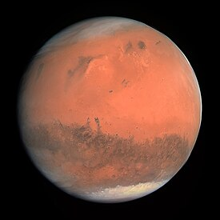

ریخ[۱] یا بهرام چهارمین سیاره در منظومهٔ شمسی است که در یک مدار طولانیتر و با سرعتی کمتر از زمین به دور خورشید میچرخد. هر یک بار گردش این سیاره به دور خورشید معادل ۶۸۷ شبانهروز زمین طول میکشد و طول شب و روز آن از زمین کمی طولانیتر است.[۲] نام فارسی این سیاره بهرام و نام عربی-یونانی آن مِریخ است. در کتابهای قدیمی فارسی آن را فلک شحنهٔ پنجم و سایس رواق پنجم نیز نامیدهاند. قطر مریخ نزدیک به یکدوم قطر زمین و برابر ۶٬۷۹۰ کیلومتر است. (قطر زمین: ۱۲٬۷۵۶ کیلومتر). نوری که از خورشید به مریخ میرسد نصف نوری است که زمین دریافت میکند، اما روز مریخی چهل دقیقه طولانیتر از زمستان زمین است و به این خاطر امکان رشد گیاهان در شرایط گلخانهای در مریخ وجود دارد.[۳] روزهای مریخ ۲۴ ساعت و ۳۷ دقیقه طول میکشد. از آنجا که محور سیاره مریخ همانند زمین °۲۴ درجه کج است، در این سیاره نیز فصلهای سال وجود دارند. اما هر سال مریخی کم و بیش دو برابر سال زمینی یعنی ۶۷۸ روز طول میکشد.[۴] مریخ از زمین کم چگالیتر است، به گونهای که حجمی برابر ۱۵٪ و جرمی برابر ۱۱٪ زمین دارد. مساحت سطح آن تنها اندکی کمتر از مجموع سطوح خشکیهای زمین است. مریخ در برابر عطارد بزرگتر و دارای جرم بیشتر و در نتیجه چگالیتر است. همین زمینه سبب شده است نیروی گرانش بیشتری در سطح مریخ وجود داشته باشد. مریخ از نظر میزان حجم و جرم، هشتمین جسم در منظومهٔ شمسی است. مریخ از دید اندازه، جرم و گرانش سطح، حالتی میان زمین و ماه (ماه زمین) دارد؛ ماه قطری برابر یک دوم قطر مریخ دارد، در حالی که قطر زمین حدود دو برابر قطر مریخ است، زمین دارای جرمی در حدود ده برابر جرم مریخ است، در حالی که جرم ماه ده برابر کمتر از مریخ است. نمای سرخ-نارنجی رنگ مریخ در اثر وجود آهن (III) اکسید، که بیشتر به هماتیت یا زنگ آهن مشهور است، به وجود آمده است.